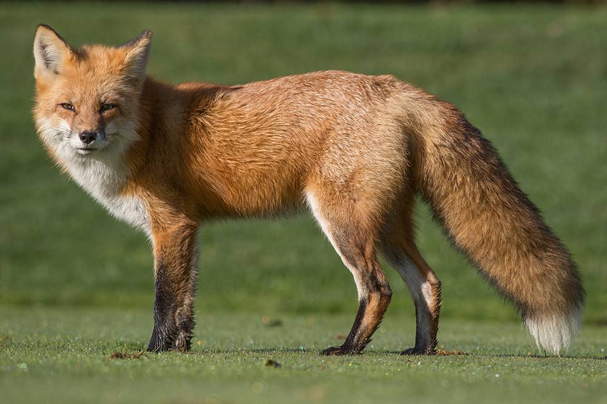

Fox
Small omnivorous canids known for their bushy tails and cunning behavior.
- Species: Vulpes vulpes
- Diet: Omnivore
- Size: 9-12 inches tall
- Weight: 8-15 lbs
- Life span: 2-5 years in the wild
- Habitat: Forests, fields, urban edges
- Found: Northern Hemisphere
- Can be pet: Rarely
Trivia: Foxes use a wide range of vocal sounds to communicate, including barks, screams, and chirps.